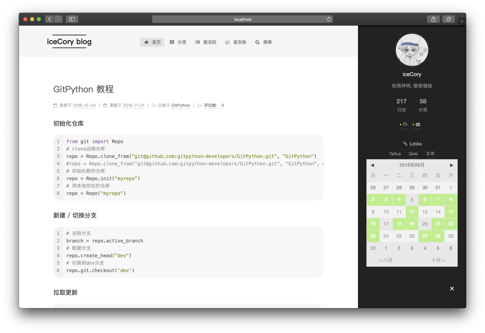

简洁的hexo-next日历云插件, 在日历上显示提交标记

npm install --save git://github.com/icecory/theme-next-calendar#hexo
git clone --depth=1 git@github.com/icecory/theme-next-calendar themes/next/source/lib/calendar
在themes/next/layout/_layout.swig最后加入{% include '../source/lib/calendar/calendar.swig' %}
_config.yml配置custom_file_path:
sidebar: source/_data/sidebar.swig
styles: source/_data/calendar.styl
CloudCalendar:
enable: true
language: zh-CN
single: true
root: /calendar/
默认是在边栏中渲染, 当然也可以在任何位置显示, 只要移动sidebar.swig中的代码即可
日历插件内各元素的颜色都是可定制的, 可以通过修改calendar.styl文件来达到更好的效果.
提取自Landscape-F主题, 修改后适配theme-next